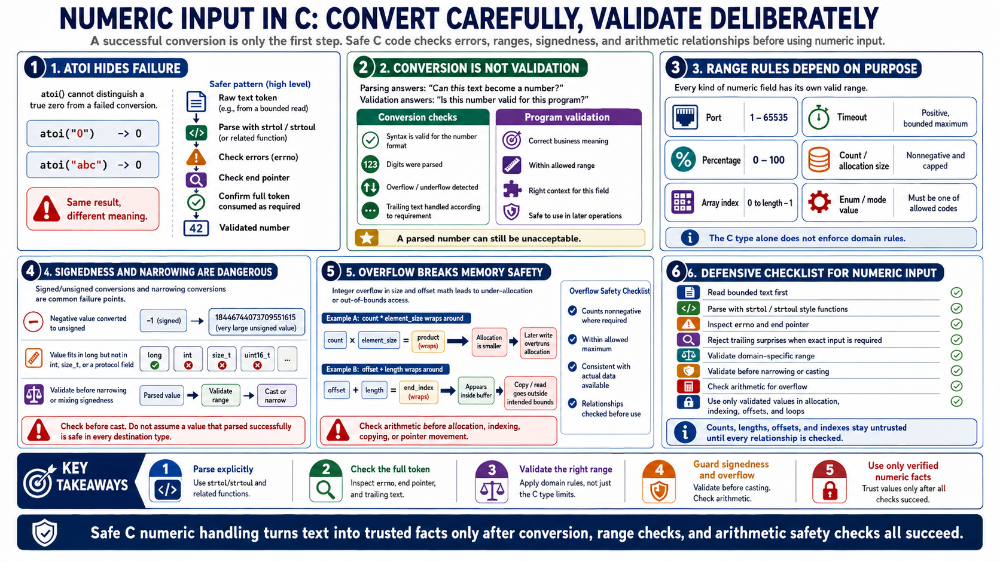

Numeric Parsing and Integer Safety
Connecting to LMS... Progress: in progress

Narration
Numbers from input should not be converted with routines that hide failure. A function such as atoi cannot reliably tell the difference between a real zero and a failed conversion. A safer pattern uses strtol, strtoul, or related functions at a high level: reset errno when appropriate, parse the token, inspect the end pointer, and confirm that the value ended where the format says it should end. Conversion is only the first question. The second question is whether the converted number is valid for the program.
Range validation must be tied to the purpose of the value. A port, count, array index, timeout, allocation size, offset, percentage, and enum value all have different valid ranges. The C type system will not automatically enforce those domain rules. Signed and unsigned conversions are especially easy to get wrong. A negative value converted to an unsigned type can become a very large value. A value that fits in a long may not fit in an int, a size_t, or a protocol field. Validate before narrowing or mixing signedness.
Integer overflow becomes dangerous when a value is used to size memory or advance through a buffer. A calculation such as count times element size can wrap around and allocate less memory than later code expects to fill. Offset plus length can wrap and appear to be inside a buffer when it is not. Check calculations before allocation, indexing, copying, or pointer movement. Treat counts, lengths, offsets, and indexes as untrusted until every relationship has been checked: nonnegative where required, within the allowed maximum, and consistent with the actual data available.